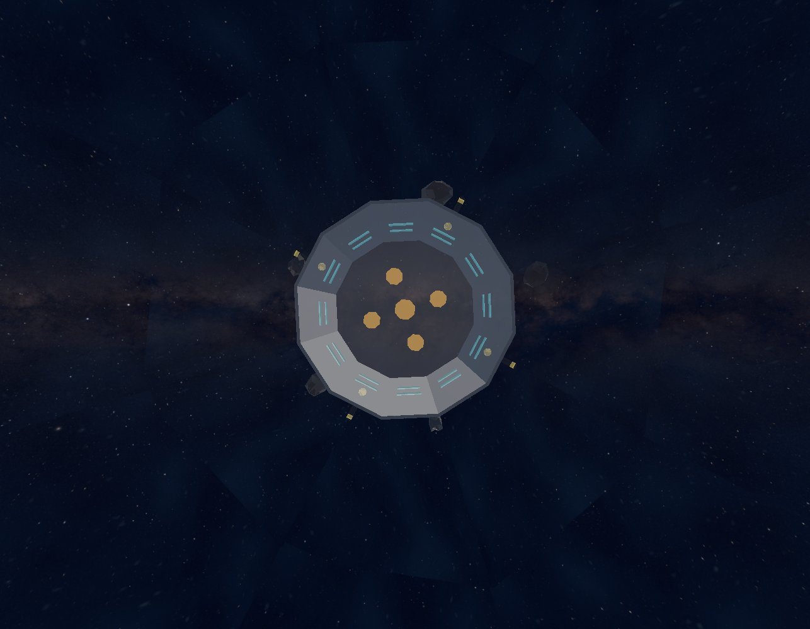
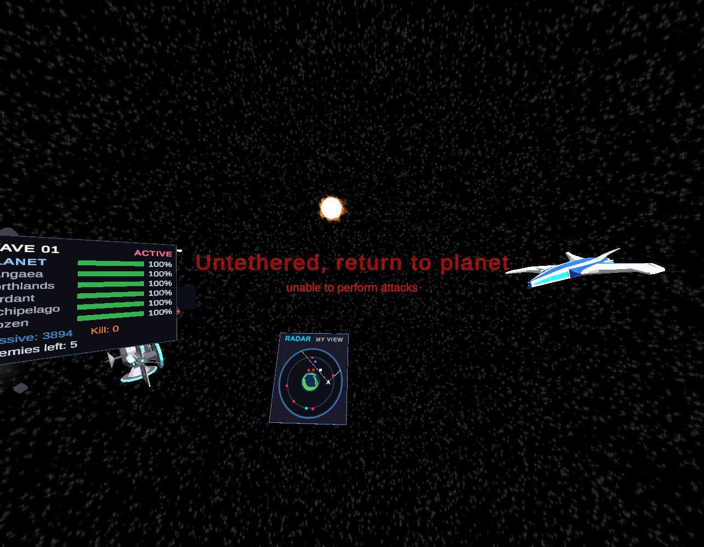
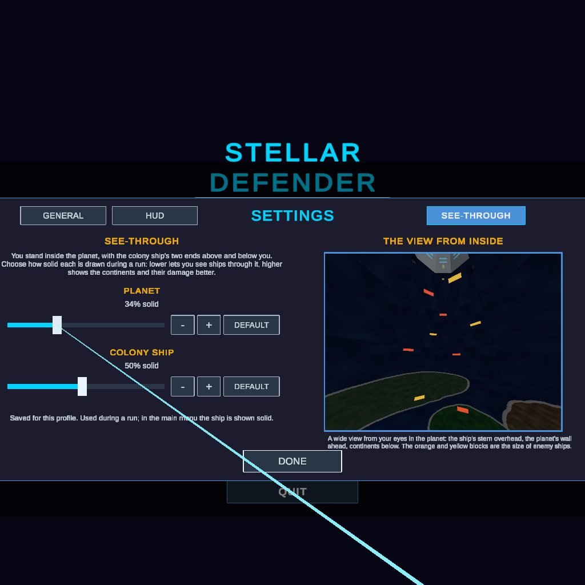
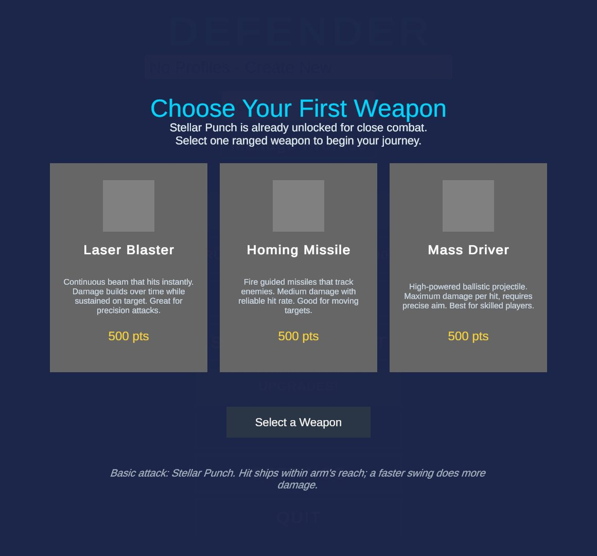
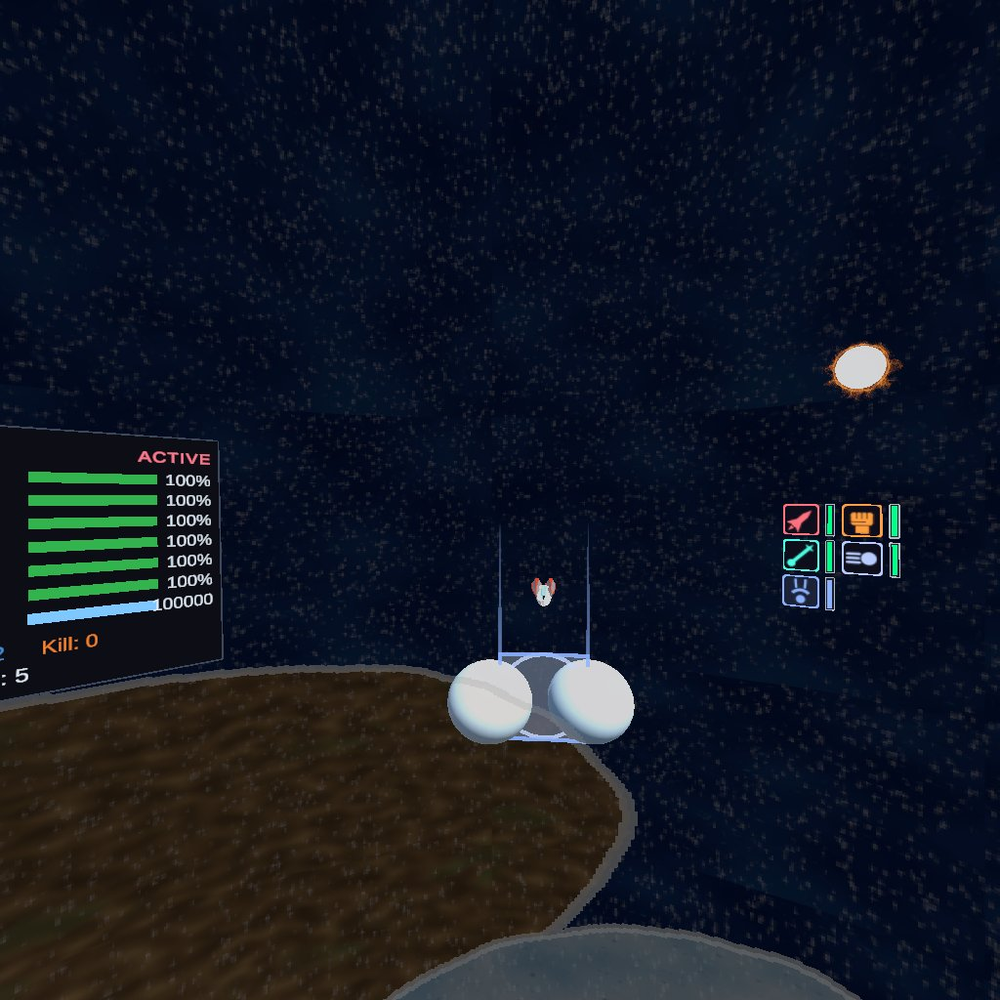
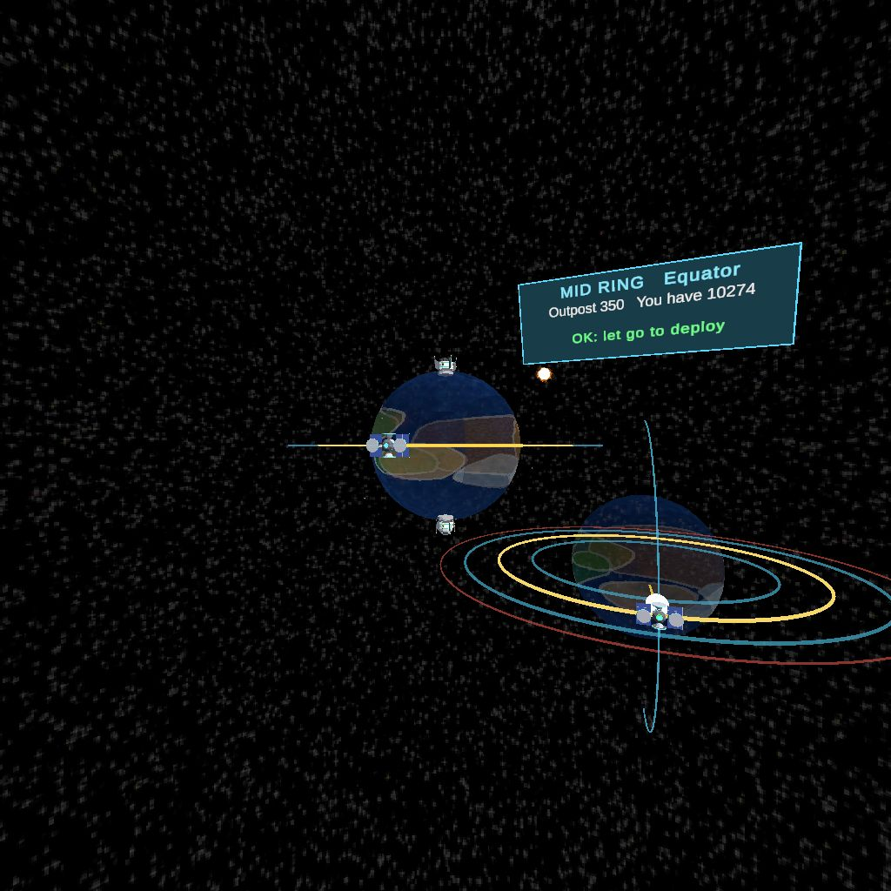
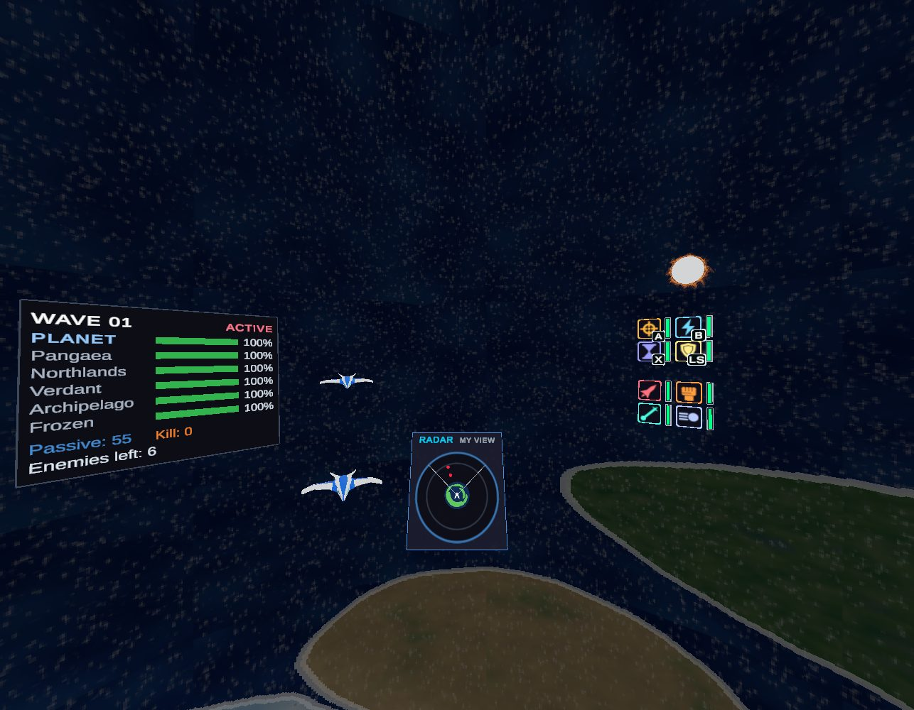

Hold the planet for ten waves
Stellar Defender is a VR exercise game for Meta Quest. Enemy ships attack in waves. You stand inside the planet you defend, punch the ships that come close and shoot the rest with hand-motion weapons, buy defenses between waves, and spend what you earned on permanent upgrades after the run. The planet is 75 game units in radius and turns 6 degrees per second. How you play covers where you stand and your weapons.
The loop
Steps 2 to 4 repeat each wave. The run ends after wave 10 (a win) or when the planet's health reaches zero.
Resources
Passive pays for the shop during a run; kills earn Kill points, which become Upgrade Points for the tree when the run ends. Rewards lists every source and how the end-of-run payout is worked out.
Planet 1's ten waves
Planet 1 is the only planet so far. Waves 1 to 5 are written by hand; waves 6 to 10 are built by the AI Director from a seed drawn when the run starts, so they change from run to run. Ship counts are for Normal; the difficulty scales them (Easy 0.8x, Hard 1.25x, see Difficulty below). A wave's own health and damage factors stack with the difficulty's. The clear bonus is Passive paid when the wave is cleared (Rewards).
When a wave ends
- Cleared: once all of a wave's ships have come and none of them is left, counting the ships its Spawners and any Iron Leviathan released.
- Time out: otherwise the wave ends when its time runs out. Ships still alive stay and fight on into the next wave.
- Clear-up: no new wave ships arrive in the last 10 s of a wave's time, so the end belongs to the ships already out. A Spawner still alive keeps releasing.
- Last wave: the run's final wave goes on until every ship is destroyed, its own and any left from earlier waves, or until one extra minute after its time runs out. Either way the run is won.
- Arrivals: at most 4 of a wave's ships start in any one second; the others wait a quarter second at a time. Ships released by Spawners don't count toward this.
Shop between waves (Passive)
Prices rise by the scaling factor with each purchase in a run. Left Y opens and closes the shop in VR.
Choice of three
Difficulty
Enemy speed does not change with difficulty. Health, damage, ship count and the spawn window (How you play) do.
Heat modifiers
Challenges
Rewards
Every source of Passive, Kill points and Upgrade Points, and how the payout at the end of a run is worked out. The numbers come from the game's settings and are first values to tune.
Passive during a run
Spent in the shop between waves and on stations. Whatever is left when the run ends is lost.
Kill points
Only ships your side destroys pay: your punches, weapons, mines and abilities, your turrets and stations. Nothing is paid for a Suicider that reaches the planet, rams a station or dives into your Shield, or for a ship the colony ship's guns shoot down over a pole. Ships a Spawner releases pay their own points when you destroy them. Heat and a wave's own factors don't change a ship's points.
Upgrade Points at the end of a run
Upgrade Points = Kill points x win bonus x heat x challenge
How you play
You are a giant standing in the planet. The planet is a see-through ball from the top of your head down to about your waist. Your eyes are inside it, near its top, and you look out through its surface at the ships coming in around you. Turn to face them, punch the close ones, and fire your other weapons with hand motions.
Everything on this page was tested with a simulated headset in the Editor, not on a Quest. Sizes in meters are for the default body.
Where you stand

Reach and Untethered
Fit the planet to your body
SETTINGS in the main menu. On GENERAL, MEASURE MY BODY: stand straight, hold both arms straight out to the sides and pull both triggers; your eye height and reach are saved to your profile. PLANET SIZE and PLANET HEIGHT change the planet by hand, and DEFAULT sizes it from your body again. On SEE-THROUGH, a slider each for the planet and the colony ship (5% to 100% solid, 35% by default) with a live view from inside. On GRAPHICS, the sky: SHARP (the default) or SOFT, a smaller copy that loads faster. CREDITS is on every SETTINGS page.




Your starting weapons
Every profile has the Stellar Punch. A new profile also picks one ranged weapon, right after its name: the Laser Blaster, the Homing Missile or the Mass Driver. That weapon is free and the choice is not offered again; the other two cost 500 Upgrade Points each in UPGRADES!. The Mass Driver is the hardest to aim and hits hardest.

Weapons
One settings file holds every weapon's numbers, for VR and the desktop test harness alike. Damage is before upgrades and critical hits. Speeds are in game units per second; hand distances and speeds are real meters. Numbers are first values to tune.
Weapon modes (Railgun, Wide Beam, Seeker Swarm and the rest) are cards in the upgrade tree: own any of them, switch one on in UPGRADES!.
Abilities
The Shield's cards (SHIELD branch) make it stronger, wider (pull your hands apart after the charge, one lane more per 15 cm; one strength covers the whole width), quicker to raise, mending, or two at once. The other four are bought in the upgrade tree (Utilities); level 2 shortens the cooldown to 75%. Buttons stand in until their hand motions are built.


Where ships come from
- Hand motions modeled on tai chi for the four abilities (buttons stand in).
- Placing stations by hand at their real orbits (today a hand-held globe stands in).
- The Iron Leviathan as the whole of planet 1's wave 10. Today no wave sends it.
- A skill tree for the enemies (built, but switched off).
- Saved builds for each character.
Structures
The turrets, stations, mine, the colony ship's two halves and the Blocker, as low-poly models from the make-model library. Drag to turn a model, scroll or pinch to zoom. Amber dots mark attach points: where turrets mount on a station, the Bulwark's built-in guns, and the colony ship's gun barrels.




Stations go on one of three rings, 1.35, 1.65 and 2 planet radii out. A turret on a station mount aims down to 30 degrees below level and does a quarter of its planet-ring damage (a first value). The Space Stations card costs 2,625 Upgrade Points, Station Limit 1,400 and then 2,100.
Upgrade tree
All cards as the game lays them out. Click a card for its cost and effect at every level. Use Buy level to plan a build: the planner tracks what you've spent, opens cards whose parents you own (some at a set level), and respects the point gates, which close again if you sell back below them. Your plan stays in this browser.
Enemy types
Base stats before difficulty, wave and elite factors. Speeds are in game units per second (the planet's radius is 75). Points are what a kill pays before the difficulty's kill factor. The first five types make up every wave today; the last five are built but no wave sends them yet (the Iron Leviathan is planned for planet 1's wave 10). "W6-10" means the AI Director may use the type in waves 6 to 10.
SPECIES on the main menu can give the enemy types another look and sound from a species pack. Only a test pack exists so far.

Shooter loadouts
Shots every 4 s times the rate factor. Advanced Shooters fire both weapons, each on its own timer. Under an EMP jam, guns, beams and bombs keep firing; missiles do not launch.
Variations
Mine awareness
Level 0 ignores mines. Level 1 steers around a mine's reach. Level 2 also flees a chasing mine it can outrun and keeps clear of a charging Focused Blast. Diving and jammed ships never react.
Interface
Screenshots from the playtest runs of 2026-11-17 to 19, seen from the eyes inside the planet. They come from a simulated headset in the Editor, not a Quest, rendered with a wide field of view, so their edges look stretched.
The HUD in a run
The HUD is your vision: it floats 1.5 m away but is drawn over everything in the world, the planet's wall, the colony ship and any ship passing behind a panel. It follows your body loosely: the panels stay put until your head turns 20 degrees away, then swing after it. Every panel sits between 10 degrees above eye level and the planet's equator line, so the view ahead and the continents below stay clear.
- Status panel (left): the wave and its state, the planet and each continent with a health bar, Passive and Kill points, and on Easy and Normal the enemies left.
- Ability and weapon tiles (right): an icon and a fill bar for each ability and weapon you own. The Shield's tile is full while no shield is up, shows the charge while you raise one, then the strength it has left.
- Markers: a red-orange arrow at the edge of the view for ships you can't see, with a count when several share a direction.
- Notices ahead (wave start, an ability refused) and the radar below them once you buy it.
A menu (pause, choice of three, shop, game over) hides the HUD and opens 1.25 m ahead. ADJUST INTERFACE in the pause menu moves and sizes the panels; SETTINGS, HUD switches each part on or off, puts the side panels left or right and sizes them from 70% to 140%. Both are saved per profile.
